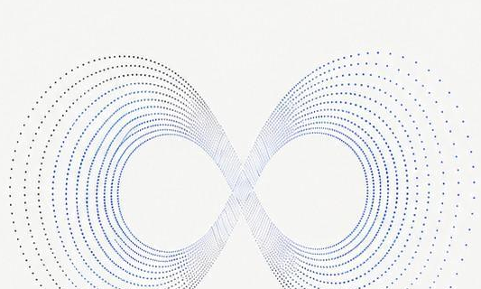
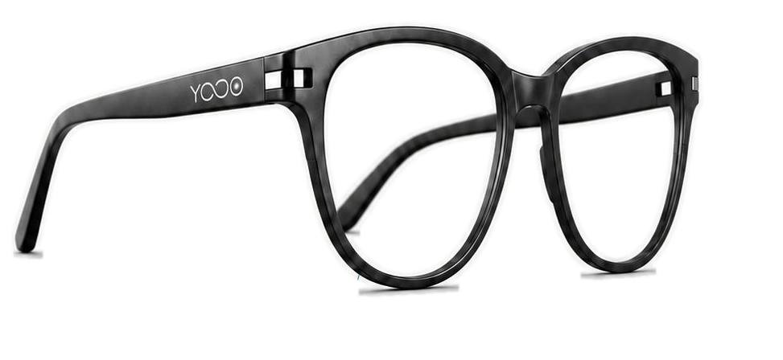
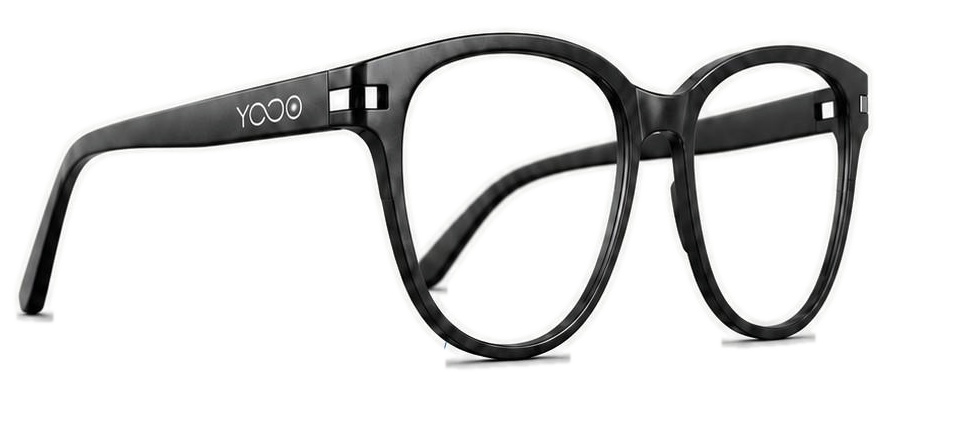

高性能芯片
低功耗处理器支持本地 AI 运算，减少等待，也减少对云端连接的依赖。

YONO 将人类视界与数字算力融合在一副 36g 的轻量眼镜里，让翻译、导航、记录与问答自然浮现在眼前。

AI SMART GLASSES
YONO 不让屏幕成为新的隔阂。它以开放式声学、AI 摄像头与本地算力，在你看见世界的同时理解场景、语言和行动意图。
低功耗处理器支持本地 AI 运算，减少等待，也减少对云端连接的依赖。
双麦克风阵列降噪拾音，定向声场让语音助手和通话保持清晰。
照片、视频、环境识别和路线提示都从你的真实视线出发。
LENS VIEW AI
YONO 将关键数据压缩成轻量提示：看见路标、听见外语、识别目标、提醒日程。信息只在需要时出现，像视野的一部分。
CORE FUNCTIONS
四种核心能力围绕真实生活展开，而不是停留在概念演示里。
摄像头、麦克风和运动状态共同理解你所处的环境。YONO 能识别眼前物体、文字与场景，并以轻提示方式给出建议。
DAILY SCENES
场景横向滑动，看看 YONO 如何在不同生活片段里保持克制、清晰和高效。
路线提示停留在视线边缘，重要转向提前出现，不需要反复低头查看手机。
菜单、路牌、对话被实时翻译成你熟悉的语言，信息跟随视线而来。
听到的重点自动沉淀成摘要，灵感、任务和追问在会后同步到手机。
不用举起设备，也能从真实视角捕捉片刻，适合运动、亲子和户外探索。
SCROLL STORY
滚动叙事把 YONO 的产品逻辑拆成三步：感知真实世界、理解当前语境、以最轻的方式给出行动。
AI 摄像头负责捕捉文字、路牌、物体和空间关系，视觉信息不再被封存在手机屏幕中。
多模态输入让 YONO 结合语音、视线与位置，判断需要翻译、导航、摘要还是提醒。
镜片提示、开放声场和触控反馈共同形成克制交互，让科技回到日常之后。
UI CONCEPT
YONO 的界面不抢占视线，只把电量、环境亮度、移动状态和 AI 标注压缩成清晰层级。手机 App 负责沉淀记录，镜片只负责当下需要。
SHOP YONO
前端模拟购买流程，支持配置选择、加入购物车 Toast 和购买弹窗。

已选择：曜石黑，日常高清镜片，基础 AI 套装。
You Know. I Know.
见你未见，懂你所想。
YONO 相信，最伟大的科技总是悄然隐匿于日常。硬件退居幕后，视界由此无界。
这是一个前端模拟购买流程。确认后会显示成功提示，不会发起真实支付。